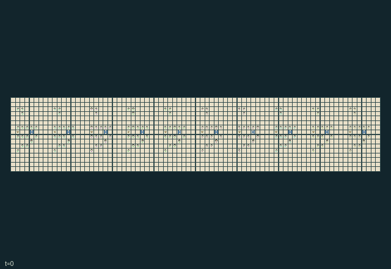

GI250 · 运河封印共同体

把各公会驳船送到下游目的地，可用双岸牵引、安全船闸、投资或实体互惠封印；磨坊生产和粮仓保护形成竞争用途。
身份与原始接口
共有 160 个独立可操作角色；每人 20 个离散动作；每人的原生观察宽度 242；原始时限 896 步。声明的单步奖励范围为 -2 至 2。观察制度标识：partially_observable。
源码校验值： 1e668db05956eb61817501a670bf4a4c126d378ad8dfb879c6d4a0dac5361472
目标、奖励、人口、地图和时限均保留原值。动图不表示已完成任务。
目标与玩法
把各公会驳船送到下游目的地，可用双岸牵引、安全船闸、投资或实体互惠封印；磨坊生产和粮仓保护形成竞争用途。
围绕上述目标安排每位角色的合法动作，以实际资源、位置、工序和信息为约束。提交的是同一步的联合行动，不是把角色按界面顺序逐个推进。动作编号与按钮名保持游戏中的英文，见下方逐项操作表。
自然完成、失败和截断由原始内核决定；最长运行 896 步，不能把到达时限当作成功。先看结束标记，再检查目标、损失和实际回报。空间游戏保留原始吸收终止；抽象游戏保留历史终止行为。
这款游戏体现的理念
资源公地与外部性: 动作会改变其他角色也要面对的持久资源或负担。比较抽取与维护时，应记录下游资源轨迹，不能只看当前得分。
承诺、交换与治理: 承诺会占用时间、资金、通行或材料。区分口头约定、已生效承诺与最终交付，也记录取消和到期。
互补生产与服务: 有效产出依赖有序工序、稀缺设备或另一角色能力。应统计真正完成的产品和资源回流，不能把中间动作数当作成功。
联合运输与共享通行: 位置、载物几何、占位与持久通行条件约束下一步谁能成功。区分实体交接、共用控制和同步合力，不能用合作标签替代机制。
生存、防护与救援: 防护与维修会改变其他角色未来可行动范围。除交付外也记录损失、暴露、救援和设施状态；生存条件以真实内核为准。
这些是规则结构支持的研究问题，不是已观察到的学习效果。
实际游玩操作指南
crucibles play --game gi250保持终端运行并打开打印的网址，选择本款、设种子，点击 Create session 建局。游戏本体始终为英文。
用 Assign / take over 把角色编号或范围交给主持人，或用 Assign all roles 接管全员。用 Create player invitation 邀请另一参与者，再分配不重叠角色；全部原角色均可操作。
为每个接管角色选合法指令，点击 Queue 排队。方向键或字母方向键在本款存在对应动作时，为当前角色视角排队；空格或 Advance one joint step 同时推进全员。无方向动作时使用下拉框。
未排队角色由标注的未经训练、合法动作均匀采样策略操作。下一步前可接管或释放，不重置世界。完整状态调试视角暴露特权信息并永久记录；角色视角保留权限。关闭会话可保留日志，服务重启不恢复会话。
全部动作操作表
编号和英文按钮逐项对应清单。中文提示说明操作类别；具体目标、阈值、阶段和顺序按本款规则与清单执行。合法不保证有产出，前提不足可能没有效果。
0·Wait— 等待、恢复或补充；是否产生被动变化取决于本款规则。
1·North— 按按钮方向移动或施力；距离、占位、载物和阶段仍须满足本款限制。
2·East— 按按钮方向移动或施力；距离、占位、载物和阶段仍须满足本款限制。
3·South— 按按钮方向移动或施力；距离、占位、载物和阶段仍须满足本款限制。
4·West— 按按钮方向移动或施力；距离、占位、载物和阶段仍须满足本款限制。
5·Collect timber— 进行所列采收、交付或兑现；地点、对象和加工状态必须匹配，不能假定按钮必然成功。
6·Request lock opening— 改变所列开关、锁存或配置；持续多久以及何时影响伙伴，以当前规则为准。
7·Inspect downstream closure— 执行检查或测量；核对成本、信息归属和测量时点，结果不自动对所有人公开。
8·Close lock— 改变所列开关、锁存或配置；持续多久以及何时影响伙伴，以当前规则为准。
9·Issue own guild seal— 提交所列交易、权利或承诺操作；注意对方同意、余额、有效期与既有承诺。
10·Post carried seal— 提交所列交易、权利或承诺操作；注意对方同意、余额、有效期与既有承诺。
11·Withdraw posted seal— 撤回、取消或超时处理已有安排；已锁定成本、保证金或物品按本款规则处理。
12·Tow east— 按按钮方向移动或施力；距离、占位、载物和阶段仍须满足本款限制。
13·Tow west— 按按钮方向移动或施力；距离、占位、载物和阶段仍须满足本款限制。
14·Deliver barge cargo— 进行所列采收、交付或兑现；地点、对象和加工状态必须匹配，不能假定按钮必然成功。
15·Repair lock or hull— 处理清理、维修或支撑；检查耗材、距离及对公共设施的影响。
16·Offer tool exchange— 提交所列交易、权利或承诺操作；注意对方同意、余额、有效期与既有承诺。
17·Read water forecast— 进行所列种植或照料；资源和生长阶段限制仍然有效，收益可能延迟。
18·Build bypass— 执行所列生产、施工或设备操作；互补工序、热度、工具和材料前提仍须满足。
19·Share water forecast— 进行所列种植或照料；资源和生长阶段限制仍然有效，收益可能延迟。
角色与能力标识
以下保留英文游戏能力标识，便于在界面找到角色，并非可任意互换的皮肤。协调交接前先查看对应角色的合法动作。
agent_0·guild 0: gatekeeper/builder; independently controllable
agent_1·guild 0: inspector; independently controllable
agent_2·guild 0: rope carrier; independently controllable
agent_3·guild 0: rope carrier; independently controllable
agent_4·guild 0: gatekeeper/builder; independently controllable
agent_5·guild 0: seal courier; independently controllable
agent_6·guild 0: rope carrier; independently controllable
agent_7·guild 0: inspector; independently controllable
agent_8·guild 0: gatekeeper/builder; independently controllable
agent_9·guild 0: seal courier; independently controllable
agent_10·guild 0: rope carrier; independently controllable
agent_11·guild 0: inspector; independently controllable
agent_12·guild 0: gatekeeper/builder; independently controllable
agent_13·guild 0: seal courier; independently controllable
agent_14·guild 0: rope carrier; independently controllable
agent_15·guild 0: inspector; independently controllable
agent_16·guild 1: gatekeeper/builder; independently controllable
agent_17·guild 1: inspector; independently controllable
agent_18·guild 1: rope carrier; independently controllable
agent_19·guild 1: rope carrier; independently controllable
agent_20·guild 1: gatekeeper/builder; independently controllable
agent_21·guild 1: seal courier; independently controllable
agent_22·guild 1: rope carrier; independently controllable
agent_23·guild 1: inspector; independently controllable
agent_24·guild 1: gatekeeper/builder; independently controllable
agent_25·guild 1: seal courier; independently controllable
agent_26·guild 1: rope carrier; independently controllable
agent_27·guild 1: inspector; independently controllable
agent_28·guild 1: gatekeeper/builder; independently controllable
agent_29·guild 1: seal courier; independently controllable
agent_30·guild 1: rope carrier; independently controllable
agent_31·guild 1: inspector; independently controllable
agent_32·guild 2: gatekeeper/builder; independently controllable
agent_33·guild 2: inspector; independently controllable
agent_34·guild 2: rope carrier; independently controllable
agent_35·guild 2: rope carrier; independently controllable
agent_36·guild 2: gatekeeper/builder; independently controllable
agent_37·guild 2: seal courier; independently controllable
agent_38·guild 2: rope carrier; independently controllable
agent_39·guild 2: inspector; independently controllable
agent_40·guild 2: gatekeeper/builder; independently controllable
agent_41·guild 2: seal courier; independently controllable
agent_42·guild 2: rope carrier; independently controllable
agent_43·guild 2: inspector; independently controllable
agent_44·guild 2: gatekeeper/builder; independently controllable
agent_45·guild 2: seal courier; independently controllable
agent_46·guild 2: rope carrier; independently controllable
agent_47·guild 2: inspector; independently controllable
agent_48·guild 3: gatekeeper/builder; independently controllable
agent_49·guild 3: inspector; independently controllable
agent_50·guild 3: rope carrier; independently controllable
agent_51·guild 3: rope carrier; independently controllable
agent_52·guild 3: gatekeeper/builder; independently controllable
agent_53·guild 3: seal courier; independently controllable
agent_54·guild 3: rope carrier; independently controllable
agent_55·guild 3: inspector; independently controllable
agent_56·guild 3: gatekeeper/builder; independently controllable
agent_57·guild 3: seal courier; independently controllable
agent_58·guild 3: rope carrier; independently controllable
agent_59·guild 3: inspector; independently controllable
agent_60·guild 3: gatekeeper/builder; independently controllable
agent_61·guild 3: seal courier; independently controllable
agent_62·guild 3: rope carrier; independently controllable
agent_63·guild 3: inspector; independently controllable
agent_64·guild 4: gatekeeper/builder; independently controllable
agent_65·guild 4: inspector; independently controllable
agent_66·guild 4: rope carrier; independently controllable
agent_67·guild 4: rope carrier; independently controllable
agent_68·guild 4: gatekeeper/builder; independently controllable
agent_69·guild 4: seal courier; independently controllable
agent_70·guild 4: rope carrier; independently controllable
agent_71·guild 4: inspector; independently controllable
agent_72·guild 4: gatekeeper/builder; independently controllable
agent_73·guild 4: seal courier; independently controllable
agent_74·guild 4: rope carrier; independently controllable
agent_75·guild 4: inspector; independently controllable
agent_76·guild 4: gatekeeper/builder; independently controllable
agent_77·guild 4: seal courier; independently controllable
agent_78·guild 4: rope carrier; independently controllable
agent_79·guild 4: inspector; independently controllable
agent_80·guild 5: gatekeeper/builder; independently controllable
agent_81·guild 5: inspector; independently controllable
agent_82·guild 5: rope carrier; independently controllable
agent_83·guild 5: rope carrier; independently controllable
agent_84·guild 5: gatekeeper/builder; independently controllable
agent_85·guild 5: seal courier; independently controllable
agent_86·guild 5: rope carrier; independently controllable
agent_87·guild 5: inspector; independently controllable
agent_88·guild 5: gatekeeper/builder; independently controllable
agent_89·guild 5: seal courier; independently controllable
agent_90·guild 5: rope carrier; independently controllable
agent_91·guild 5: inspector; independently controllable
agent_92·guild 5: gatekeeper/builder; independently controllable
agent_93·guild 5: seal courier; independently controllable
agent_94·guild 5: rope carrier; independently controllable
agent_95·guild 5: inspector; independently controllable
agent_96·guild 6: gatekeeper/builder; independently controllable
agent_97·guild 6: inspector; independently controllable
agent_98·guild 6: rope carrier; independently controllable
agent_99·guild 6: rope carrier; independently controllable
agent_100·guild 6: gatekeeper/builder; independently controllable
agent_101·guild 6: seal courier; independently controllable
agent_102·guild 6: rope carrier; independently controllable
agent_103·guild 6: inspector; independently controllable
agent_104·guild 6: gatekeeper/builder; independently controllable
agent_105·guild 6: seal courier; independently controllable
agent_106·guild 6: rope carrier; independently controllable
agent_107·guild 6: inspector; independently controllable
agent_108·guild 6: gatekeeper/builder; independently controllable
agent_109·guild 6: seal courier; independently controllable
agent_110·guild 6: rope carrier; independently controllable
agent_111·guild 6: inspector; independently controllable
agent_112·guild 7: gatekeeper/builder; independently controllable
agent_113·guild 7: inspector; independently controllable
agent_114·guild 7: rope carrier; independently controllable
agent_115·guild 7: rope carrier; independently controllable
agent_116·guild 7: gatekeeper/builder; independently controllable
agent_117·guild 7: seal courier; independently controllable
agent_118·guild 7: rope carrier; independently controllable
agent_119·guild 7: inspector; independently controllable
agent_120·guild 7: gatekeeper/builder; independently controllable
agent_121·guild 7: seal courier; independently controllable
agent_122·guild 7: rope carrier; independently controllable
agent_123·guild 7: inspector; independently controllable
agent_124·guild 7: gatekeeper/builder; independently controllable
agent_125·guild 7: seal courier; independently controllable
agent_126·guild 7: rope carrier; independently controllable
agent_127·guild 7: inspector; independently controllable
agent_128·guild 8: gatekeeper/builder; independently controllable
agent_129·guild 8: inspector; independently controllable
agent_130·guild 8: rope carrier; independently controllable
agent_131·guild 8: rope carrier; independently controllable
agent_132·guild 8: gatekeeper/builder; independently controllable
agent_133·guild 8: seal courier; independently controllable
agent_134·guild 8: rope carrier; independently controllable
agent_135·guild 8: inspector; independently controllable
agent_136·guild 8: gatekeeper/builder; independently controllable
agent_137·guild 8: seal courier; independently controllable
agent_138·guild 8: rope carrier; independently controllable
agent_139·guild 8: inspector; independently controllable
agent_140·guild 8: gatekeeper/builder; independently controllable
agent_141·guild 8: seal courier; independently controllable
agent_142·guild 8: rope carrier; independently controllable
agent_143·guild 8: inspector; independently controllable
agent_144·guild 9: gatekeeper/builder; independently controllable
agent_145·guild 9: inspector; independently controllable
agent_146·guild 9: rope carrier; independently controllable
agent_147·guild 9: rope carrier; independently controllable
agent_148·guild 9: gatekeeper/builder; independently controllable
agent_149·guild 9: seal courier; independently controllable
agent_150·guild 9: rope carrier; independently controllable
agent_151·guild 9: inspector; independently controllable
agent_152·guild 9: gatekeeper/builder; independently controllable
agent_153·guild 9: seal courier; independently controllable
agent_154·guild 9: rope carrier; independently controllable
agent_155·guild 9: inspector; independently controllable
agent_156·guild 9: gatekeeper/builder; independently controllable
agent_157·guild 9: seal courier; independently controllable
agent_158·guild 9: rope carrier; independently controllable
agent_159·guild 9: inspector; independently controllable
信息与观察权限
每个行动者仅接收自己的原生观察行；公共状态、私人字段和延迟消息须分别处理，不能从全图推断角色已经知道。
动图是完整状态调试视角，可能揭示隐藏实体或私人状态。策略输入使用 obs[agent]，不能直接使用图片、完整状态树或伙伴私人观察。字段切片和可见性见原始清单。
强化学习接入
import jax
from crucibles_jaxmarl import make
env = make("gi250")
key = jax.random.PRNGKey(0)
key, rk, ak, sk = jax.random.split(key, 4)
obs, state = jax.jit(env.reset)(rk)
actions = env.sample_actions(ak, state)
obs, state, rewards, dones, info = jax.jit(env.step_env)(sk, state, actions)
done = dones["__all__"]观察为宽度 242 的浮点向量；动作是单个整型编号；每个合法掩码有 20 项。每次转移提供全部 160 人动作。掩码采样只是工程参照，不是训练后的学习器。
step_env 保留终止数据，不自动重置；step 提供外层自动重置，在信息字典保留原始终止状态与观察。用 dones["__all__"] 划分回合，分析时区分完成、失败和时限。
对同身份同形状编译或批处理，重置、策略和转移使用独立密钥。不同形状明确分组，不能缩小人口或时限。主机渲染留在训练图外。
训练问题与公平评测
拟合前按本款目标定义有效完成指标。保留原奖励，另报真实交付或服务、损失、资源状态、未决局和逐角色回报。动画不是奖励信号。
动作会改变其他角色也要面对的持久资源或负担。比较抽取与维护时，应记录下游资源轨迹，不能只看当前得分。
承诺会占用时间、资金、通行或材料。区分口头约定、已生效承诺与最终交付，也记录取消和到期。
有效产出依赖有序工序、稀缺设备或另一角色能力。应统计真正完成的产品和资源回流，不能把中间动作数当作成功。
位置、载物几何、占位与持久通行条件约束下一步谁能成功。区分实体交接、共用控制和同步合力，不能用合作标签替代机制。
防护与维修会改变其他角色未来可行动范围。除交付外也记录损失、暴露、救援和设施状态；生存条件以真实内核为准。
比较记忆、通信或集中价值网络时须匹配策略信息，声明价值网络权限并保持角色输入过滤。伙伴或对手分布、掩码、算力和检查点选择规则须匹配，最终测试不能参与拟合或选择。
独立训练运行或来源配对块才是推断单位，同一策略的多局不是独立训练复现。保存哈希、种子、版本、设备、耗时和成本。负向、零、失败和无法判定都有效，不提供训练检查点或承诺分数。
分类与判断依据
可重叠编辑标签是阅读辅助，不证明新颖性、难度、策略等价性或学习效果。
- 资源公地与外部性
- 依据字段：
manifest.actions.17。该字段规则支持此阅读标签，可在下方原始资料逐字核对。
- 依据字段：
manifest.actions.19。该字段规则支持此阅读标签，可在下方原始资料逐字核对。
- 依据字段：
scene.rules.2。该字段规则支持此阅读标签，可在下方原始资料逐字核对。
- 承诺、交换与治理
- 依据字段：
manifest.task.objective。该字段规则支持此阅读标签，可在下方原始资料逐字核对。
- 依据字段：
manifest.actions.9。该字段规则支持此阅读标签，可在下方原始资料逐字核对。
- 依据字段：
manifest.actions.10。该字段规则支持此阅读标签，可在下方原始资料逐字核对。
- 互补生产与服务
- 依据字段：
manifest.actions.15。该字段规则支持此阅读标签，可在下方原始资料逐字核对。
- 依据字段：
scene.rules.5。该字段规则支持此阅读标签，可在下方原始资料逐字核对。
- 联合运输与共享通行
- 依据字段：
manifest.task.objective。该字段规则支持此阅读标签，可在下方原始资料逐字核对。
- 依据字段：
manifest.actions.6。该字段规则支持此阅读标签，可在下方原始资料逐字核对。
- 依据字段：
manifest.actions.8。该字段规则支持此阅读标签，可在下方原始资料逐字核对。
- 生存、防护与救援
- 依据字段：
manifest.task.objective。该字段规则支持此阅读标签，可在下方原始资料逐字核对。
- 依据字段：
scene.rules.2。该字段规则支持此阅读标签，可在下方原始资料逐字核对。
来源、回执与预览边界
纯英文无说明面板的动图把保存的未训练合法动作交给原内核重放，最多抽取二十五个真实端点，含初始与终止，无虚构插值。它是完整状态调试，不是角色观察。
工程通过不证明学习。非零浮点差异保留并记为未定，不增加容差。人类成绩尚未核验。